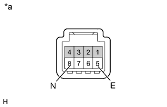

DTC C1794/94 Цепь выключателя отключения регулировки высоты (DTC режима активной диагностики) |
| Код DTC | Условие обнаружения DTC | Неисправный участок |
| C1794/94 | Сохраняется только в режиме активной диагностики. |
|
| 1.ПРОВЕРЬТЕ ВЫКЛЮЧАТЕЛЬ ОТКЛЮЧЕНИЯ РЕГУЛИРОВКИ ВЫСОТЫ |
Снимите выключатель отключения регулировки высоты (Нажмите здесь).
|  |
Измерьте сопротивление в соответствии со значениями, приведенными в таблице ниже.
| Контакты для подключения диагностического прибора | Положение переключателя | Заданные условия |
| 8 (N) - 5 (E) | Выключатель отключения регулировки высоты нажат | Менее 1 Ом |
| Выключатель отключения регулировки высоты не нажат | 10 кОм или более |
| *a | Устройство с неподсоединенным жгутом проводов (выключатель отключения регулировки высоты) |
|
| ||||
| OK | |
| 2.ПРОВЕРЬТЕ ЖГУТ ПРОВОДОВ И РАЗЪЕМ (ЭБУ УПРАВЛЕНИЯ ПОДВЕСКОЙ – ВЫКЛЮЧАТЕЛЬ ОТКЛЮЧЕНИЯ РЕГУЛИРОВКИ ВЫСОТЫ) |
Отсоедините разъем A49 ЭБУ управления подвеской.
Отсоедините разъем G112 выключателя отключения регулировки высоты.
Измерьте сопротивление в соответствии со значениями, приведенными в таблице ниже.
| Контакты для подключения диагностического прибора | Условие | Заданные условия |
| A49-13 (TD) - G112-8 (N) | Всегда | Менее 1 Ом |
| A49-13 (TD) - масса | Всегда | 10 кОм или более |
| G112-5 (E) - масса | Всегда | Менее 1 Ом |
|
| ||||
| OK | ||
| ||